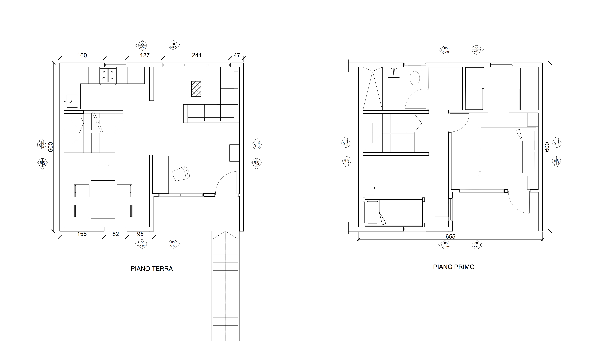
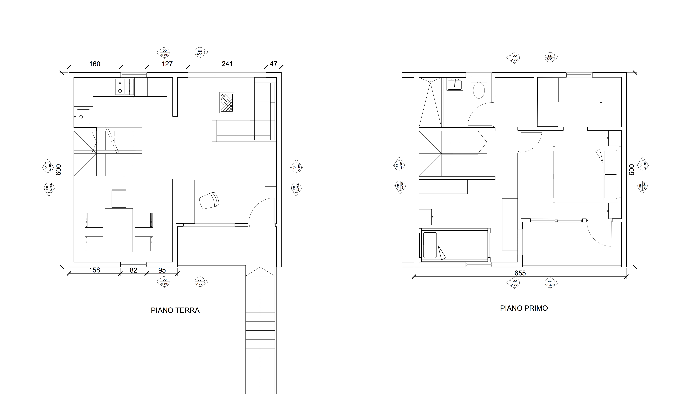
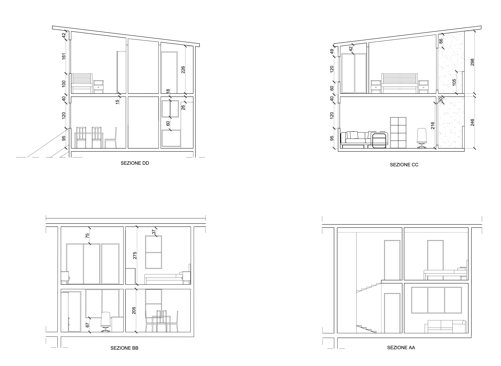
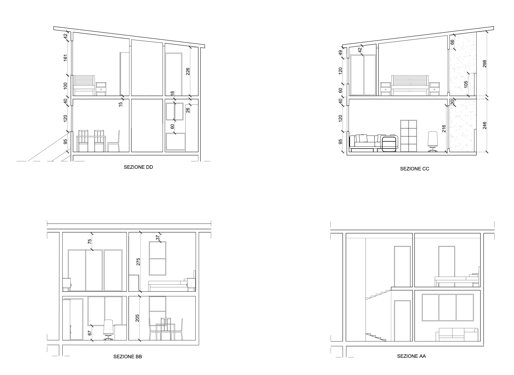
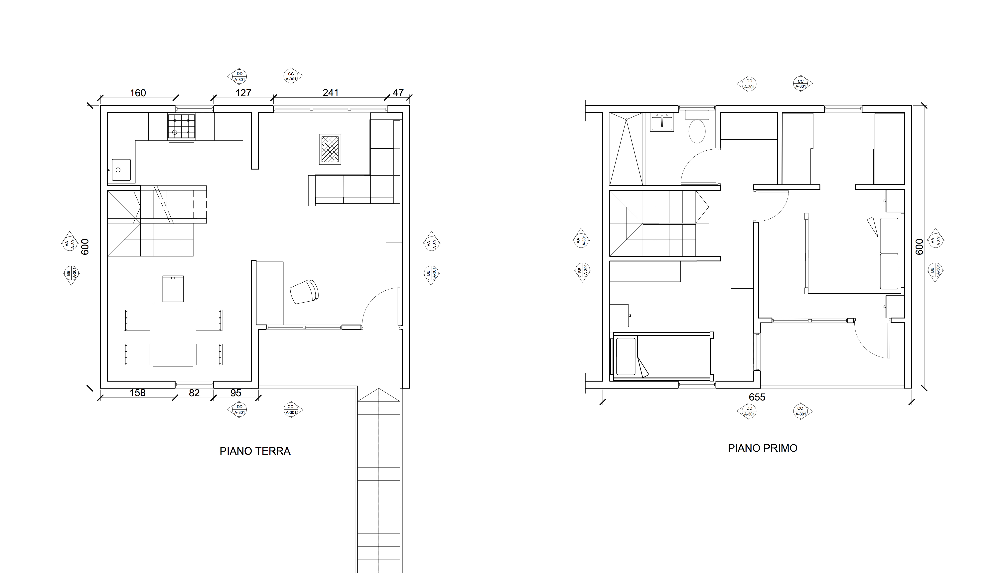
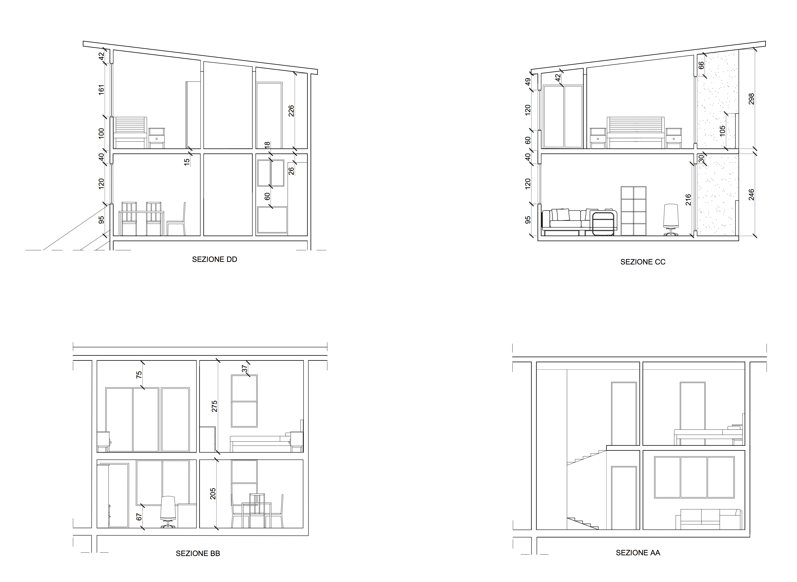

 
 Monterrey - Messico
Monterrey consists of a three-story continuous building
that in section superimposes a home (first floor) with a two-story apartment
above (2nd and 3rd story). Both units are designed to technically and
economically facilitate the final middle class standard of which we will hand
over the “first half” (40 m2). In this sense, the difficult parts of the house
(bathrooms, kitchen, stairs, and dividing walls) are designed for the expanded
scenario, that is, for a home of more than 58 m2 approx. and an apartment of
approximately 76 m2.

 L'obbiettivo da raggiungere alla fine del semestre era quello
di elaborare un progetto completo e personalizzato partendo dagli elaborati
originali di Aravena.
Il tutto era suddivisono in quattro fasi:
FASE 0: analizzare il progetto e realizzarne un modello di studio sul quale applicare
diverse textures in modo da avere una prima idea di come potesse apparire
l'esterno.
FASE 1: disegnare e progettare i 40 m2 lasciati liberi in modo da ottimizzarli
al meglio
FASE 2: scegliere arredi dal catalogo IKEA e arredare, a scelta, camera, cucina o studio.
Scelti questi, disegnarne gli esecutivi.
FASE 3: disegnare in modo dettagliato l'ambiente scelto offrendone tutte le informazioni necessarie.